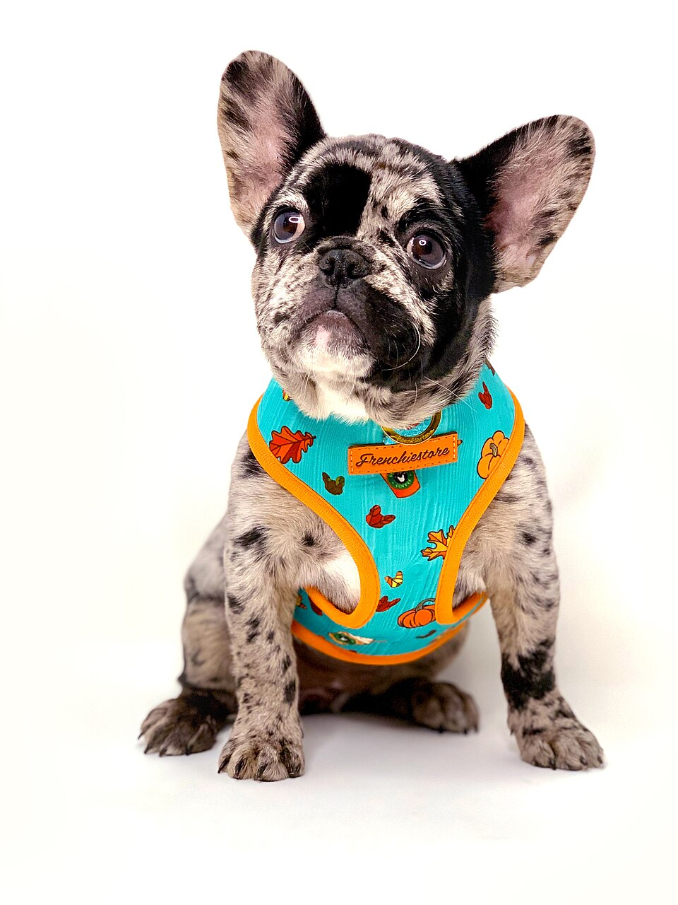

그래서 하네스가 중간에서 권한을 묻고, 실행을 막고, 파일을 되돌릴 수 있습니다. 모델은 원격 서버에 있어도 명령은 내 컴퓨터에서 실행됩니다(로컬 실행 기준).
인공지능 작동이해
코딩 에이전트는 어떻게 일하나
본 문서는 Claude 의 문서 'How Claude Code works' 를 바탕으로 작성했습니다.
Antigravity, Claude Code, Codex 같은 코딩 에이전트(Coding agent)는 파일을 찾고, 코드를 고치고, 테스트까지 돌립니다. 그런데 그 안의 대규모 언어 모델(LLM)이 하는 일은 여전히 글을 읽고 다음 글을 써 내는 것뿐입니다. 글만 쓰는 모델이 어떻게 실제 작업을 해내는지, 그 구조를 알면 에이전트에게 일을 더 잘 맡길 수 있습니다.
LLM 자체가 하는 일
입력 글→토큰→다음 토큰 확률→하나 뽑기→출력 글
LLM은 글을 받아 글을 내놓는 계산 장치입니다. 스스로 파일을 열거나 명령을 실행하는 기능은 없습니다.
모델 + 하네스 = 에이전트
코딩 에이전트는 두 부분으로 이루어집니다. 글을 읽고 다음 글을 쓰는 모델(LLM), 그리고 그 모델을 감싸고 내 컴퓨터에서 실제 일을 처리하는 프로그램입니다. Anthropic 문서는 이 프로그램을 하네스(harness)라고 부릅니다. harness는 본래 말이나 개 같은 동물의 몸에 채워 줄을 연결하는 장구를 뜻합니다. Claude Code나 Codex 같은 제품 이름은 보통 이 하네스를 가리키고, 그 안에서 쓸 모델은 따로 고를 수 있습니다.

출처: Frenchiestore, 「French Bulldog puppy wearing the Health Harness.jpg」, 위키미디어 공용, CC BY-SA 4.0. 원본(3024×4032)을 960×1280으로 축소해 사용했습니다.
코딩 에이전트의 구성
모델(LLM)+하네스=코딩 에이전트
모델지금까지의 기록을 읽고 다음에 할 행동을 글로 씁니다. 파일을 열거나 명령을 실행하지는 못합니다.
하네스모델이 읽을 글을 마련하고, 모델이 쓴 글을 실제 일로 바꿉니다. 아래 네 가지가 하네스의 일입니다.
도구 연결도구 설명서를 모델에게 보여 주고, 모델이 쓴 호출문을 해석해 실제로 실행합니다. 도구 자체(git, npm, MCP 서버 등)는 하네스 밖에 있습니다.
반복실행 결과를 기록에 덧붙여 다시 모델을 부릅니다. 모델이 도구 호출 없이 답하면 멈춥니다.
컨텍스트 관리지침·작동규칙 설정파일·대화·결과를 모아 모델이 읽을 입력을 꾸리고, 창이 차면 줄입니다.
안전장치위험한 실행 전에 승인을 묻고, 파일을 고치기 전에 체크포인트를 남깁니다.
흐름은 이렇습니다. 하네스가 모델에게 "쓸 수 있는 도구 목록"을 알려 주면, 모델은 답 대신 "이 도구를 이렇게 써 달라"는 글을 씁니다. 하네스가 그 글을 읽고 실제로 실행한 뒤, 결과를 다시 모델에게 보여 줍니다. 이것을 일이 끝날 때까지 되풀이합니다.
에이전트를 흔히 "모델 + 도구 + 반복"으로 줄여 말합니다(Anthropic, 2024). 이 자료는 도구를 실행하고 반복을 돌리는 쪽을 하네스로 묶어 봅니다. 그래야 컨텍스트 관리나 권한 확인처럼 도구도 반복도 아닌 일이 누구 몫인지, 모델이 하는 일과 프로그램이 하는 일이 어디서 갈리는지가 분명해집니다.
Claude Code 공식 문서는 이 반복을 "에이전트 루프(agentic loop)"라 부르고, 맥락 모으기·행동하기·결과 확인하기의 세 국면으로 설명합니다. 기준 시점 2026년 9월.
한 번의 요청이 처리되는 과정
"삭제 버튼이 안 돼요"라는 요청 하나가 어떻게 처리되는지 단계별로 따라가 보세요. 위쪽 네 칸은 지금 누가 일하는지를, 아래 막대는 모델이 매번 읽는 글(컨텍스트 창)이 얼마나 쌓였는지를 보여 줍니다. 막대 밑의 "컨텍스트 펼쳐 보기"를 열면 하네스가 그 글을 어떤 구조로 꾸려 모델에게 보내는지 직접 볼 수 있습니다.
설명용으로 만든 예시 작업입니다. 도구 이름(Grep, Read, Edit, Bash)은 Claude Code의 실제 도구 이름이고, 호출 형식은 읽기 쉽게 줄였습니다. 컨텍스트 토큰 수는 설명용 예시 값이며 실제 측정값이 아닙니다.
도구 호출도 결국 글이다
모델은 도구를 "누르지" 않습니다. 하네스는 대화 맨 앞에 도구 설명서(도구의 이름·설명·입력 형식을 적은 안내문으로, 코드의 docstring이 쓰이기도 합니다)를 붙여 모델에게 보여 주고, 모델은 설명서의 형식에 맞춰 호출문을 토큰으로 써 냅니다. 하네스가 이 글을 해석해 실제 기능을 실행합니다.
하네스가 모델에게 미리 보여 주는 도구 설명서 (간략화)
{ "name": "Read",
"description": "파일 내용을 읽는다",
"input": { "file_path": "읽을 파일 경로" } }
모델이 다음 토큰 예측으로 써 낸 글
store.js 파일을 읽어 보겠습니다.
{ "tool": "Read", "input": { "file_path": "src/store.js" } }
하네스가 하는 일
호출문을 해석 → 권한 확인 → 실제로 파일을 열어 내용을 읽음 → 결과를 대화 기록에 덧붙여 다시 모델에게 보냄
핵심모델이 "파일을 읽었다"고 말할 수 있는 이유는 하네스가 실제 파일 내용을 입력에 넣어 주었기 때문입니다. 넣어 주지 않은 파일에 대해서는 모델이 아는 것이 없고, 물어보면 그럴듯하게 추측할 수 있습니다.
어떤 상황에서 어떤 도구를 어떤 형식으로 부를지는 사후학습(post-training) 단계에서 도구 사용 예시로 학습합니다(Schick et al., 2023; Yao et al., 2023 참고).
모델은 어떻게 "결정"하나: 토큰 순서대로 좁혀지는 선택
모델 안에 "결정"만 하는 별도의 장치는 없습니다. 위 요청 처리 과정의 4단계(Edit로 수정)에서 모델이 써 낸 글을 앞에서부터 잘라 보면, 다음 토큰을 하나씩 뽑는 동안 결정이 차례로 좁혀집니다.
입력: 모델이 읽는 컨텍스트 \(c_k\)
지침도구 설명서 (Grep·Read·Edit·Bash)작동규칙 설정파일요청 "삭제 버튼이 안 돼요"Read 결과 19행
todos.filter(…)↓ 다음 토큰을 하나씩 뽑아 이어 씀
-
①
19번째 줄에서 filter 결과를 어디에도 저장하지 않아 목록이 바뀌지 않습니다.상황 정리먼저 쓴 글이 곧바로 컨텍스트에 더해져 뒤의 선택을 이끕니다. 원인을 "저장 누락"으로 적은 뒤에는 Edit가 나올 확률이 높아집니다.
-
②
[도구 호출 시작]계속할까, 끝낼까도구 호출 시작응답 끝눈에 보이지 않는 특수 토큰 하나의 선택입니다. "응답 끝"이 뽑히면 루프가 멈춥니다.
-
③
"tool": "Edit"무엇으로GrepReadEditBash도구 설명서에 이름이 적힌 도구만 후보가 됩니다.
-
④
"file_path": "src/store.js"어디에컨텍스트에서 베낌앞서 검색·읽기 결과에 나온 경로를 그대로 가져옵니다.
-
⑤
"old": " todos.filter(t => t.id !== id);" "new": " todos = todos.filter(t => t.id !== id);"어떻게old: 컨텍스트에서 베낌new: 새로 생성고칠 줄은 Read 결과에서 베끼고, 고친 코드만 새로 만듭니다. 읽지 않은 파일이라면 없는 경로나 줄을 그럴듯하게 지어낼 수 있습니다.
-
⑥
[호출 끝]하네스로 넘김모델의 일은 여기까지입니다. 하네스가 호출문을 해석하고, 승인을 받아 실행합니다.
결정의 근거확률을 만드는 것은 두 가지입니다. 사전학습·사후학습으로 파라미터 \(\theta\)에 새겨진 지식과 습관("먼저 찾고 읽는다", "고친 뒤 테스트한다"), 그리고 지금 컨텍스트 \(c_k\)에 적힌 상황과 지시입니다. 마지막에는 이 확률에 따라 뽑으므로, 같은 상황에서도 다른 도구나 다른 수정이 나올 수 있습니다.
①처럼 글로 쓴 이유는 결정을 돕지만, 모델 안에서 실제로 일어난 계산을 그대로 보여 준다는 보장은 없습니다(Turpin et al., 2023). 이유 설명보다 실행 결과로 확인합니다. 또 모델은 여러 수를 미리 펼쳐 비교하지 않고 한 걸음씩 정하므로, 잘못된 결정은 다음 관찰(오류 메시지)을 보고서야 바로잡힙니다.
토큰 경계와 특수 토큰 표기는 이해를 돕기 위해 단순화했습니다. 실제로는 한 칸의 글도 여러 토큰으로 나뉘어 하나씩 생성됩니다.
참고: 도구는 누가 등록하나
모델은 도구를 등록하지 않습니다. 도구를 등록하는 쪽은 하네스를 만든 개발사와 그것을 쓰는 나입니다. 하네스는 등록된 도구의 정의를 모아 매번 모델에게 보여 주고, 모델은 그 목록 안에서만 골라 호출문을 씁니다. 모델에게는 어느 방식으로 등록된 도구든 똑같이 글로 된 도구 설명서일 뿐입니다.
| 종류 | 누가 등록하나 | 어떻게 쓰나 |
|---|---|---|
| 내장 도구 | 에이전트 개발사가 프로그램 안에 처음부터 넣어 둡니다. | 파일 읽기·수정, 검색, 명령 실행 등. 사용자가 따로 등록할 일이 없습니다. |
| MCP 서버 도구 | 서버를 만든 쪽이 도구를 정의하고, 내가 내 에이전트 설정에 그 서버를 추가합니다. | 세션이 시작되면 하네스가 서버에서 도구 목록을 받아 모델에게 보여 줍니다. 모델이 호출문을 쓰면 하네스가 서버에 실행을 요청하고 결과를 기록에 덧붙입니다. |
| 기존 명령어(CLI) | 등록이 필요 없습니다. 내 컴퓨터에 설치된 프로그램입니다. | git, npm 같은 명령을 명령 실행 도구(Bash)로 부릅니다. 가장 흔한 확장 방식입니다. |
| 직접 만든 에이전트 | 개발자가 SDK로 자기 하네스를 만들며 직접 등록합니다. | 함수와 그 설명(docstring)을 도구로 등록하는 방식이 흔합니다. |
알아 둘 점도구가 많을수록 도구 설명서가 컨텍스트 창을 더 차지하고, 모델이 알맞은 도구를 고르기도 어려워집니다. 도구는 내 컴퓨터나 외부 서비스에서 실제로 실행되므로, 믿을 수 있는 출처의 도구만 추가하고 승인 요청을 읽어 봅니다.
스킬(Skills)이나 슬래시 명령처럼 자주 쓰는 작업 지침을 파일로 저장해 두는 확장도 있습니다. 이런 지침 파일은 필요할 때 컨텍스트에 불러와 쓰는 것이어서, 모델이 호출하는 도구와는 구별됩니다. 등록 방법과 명령은 도구·버전마다 다르니 실제로 쓸 때는 해당 도구의 공식 문서를 확인하세요.
모델은 컨텍스트 창의 내용만 안다
모델은 단계마다 그때까지 쌓인 기록 전체를 처음부터 다시 읽고 다음 행동을 씁니다. 이 기록이 들어가는 공간이 컨텍스트 창(Context window)입니다. 지침, 도구 설명서, 에이전트 작동규칙 설정파일, 대화, 읽은 파일, 명령 결과가 모두 여기에 쌓입니다. 이 창에 무엇을 넣고 언제 줄일지는 모델이 아니라 하네스가 정합니다.
창이 차면오래된 도구 결과를 먼저 지우고, 필요하면 대화를 요약(압축)
결과
→
→
그래서대화 초반에 말한 세부 지시가 사라질 수 있음
작동규칙 설정파일에이전트 작동규칙 설정파일(예: AGENTS.md, CLAUDE.md)은 프로젝트 폴더에 두는 설명 파일입니다. 세션을 시작할 때마다 컨텍스트에 자동으로 들어갑니다. 반드시 지켜야 할 규칙(테스트 명령, 코드 스타일, 건드리면 안 되는 파일)은 대화로 말하지 말고 여기에 적어 두는 것이 안전합니다.
새 세션은 빈 컨텍스트 창에서 시작합니다. 지난 세션의 대화는 이어지지 않고, 작동규칙 설정파일이나 자동 메모리 같은 파일로 저장해 둔 것만 다시 읽힙니다. 하위 에이전트(subagent)는 자기만의 컨텍스트 창에서 일하고 요약만 돌려주어 메인 창을 아낍니다.
안전장치: 무엇을 물어보고 무엇을 되돌릴 수 있나
에이전트는 내 컴퓨터에서 실제로 명령을 실행합니다. 그래서 하네스에는 권한 확인과 되돌리기 장치가 있습니다. 카드를 눌러 확인해 보세요.
Claude Code의 Manual(직접 승인) 모드 기준입니다. 요금제와 설정에 따라 세션이 Auto 모드로 시작할 수 있습니다. Auto 모드에서는 사람 대신 분류 모델이 행동을 검토해 위험한 것만 막습니다. 허용 목록에 넣은 명령은 묻지 않습니다. 기준 시점 2026년 9월.
그래서, 코딩 에이전트의 결과를 어떻게 받아들일까
| 작동 방식 | 결과물에 나타나는 특징 | 쓰는 법 |
|---|---|---|
| 컨텍스트 창의 내용만 봄 | 읽지 않은 파일이나 말하지 않은 규칙은 추측으로 메웁니다. | 관련 위치와 규칙을 구체적으로 알려 주고, 고정 규칙은 에이전트 작동규칙 설정파일(예: AGENTS.md, CLAUDE.md)에 적습니다. |
| 다음 토큰을 예측해 글을 씀 | 그럴듯하지만 없는 함수나 옵션을 쓸 수 있습니다. | 실행하고 테스트할 방법을 알려 줘서 에이전트가 스스로 확인하게 합니다. |
| 실행 결과를 보고 다시 고침 | 테스트나 오류 메시지가 있으면 스스로 고쳐 나갑니다. 확인 수단이 없으면 "됐다"고 말하고 끝낼 수 있습니다. | "고쳐 줘"보다 "고치고 테스트로 확인해 줘"가 낫습니다. 테스트 통과가 곧 의도대로라는 뜻은 아니니 직접 확인합니다. |
| 컨텍스트 창이 차면 내용을 압축함 | 긴 작업에서 초반 지시를 놓칠 수 있습니다. | 작업을 작게 나누고, 주제가 바뀌면 새 세션을 엽니다. |
| 확률에 따라 토큰을 뽑음 | 같은 요청에도 다른 방식으로 고칩니다. | git으로 변경을 기록해 두고 비교·되돌리기를 할 수 있게 합니다. |
| 명령을 내 컴퓨터에서 실행함 | 실수가 실제 파일·서버에 영향을 줍니다. | 승인 요청의 명령을 읽어 보고 누릅니다. 배포·삭제·데이터베이스 명령은 특히 조심합니다. |
오개념 바로잡기
에이전트가 프로젝트를 잘 아는 것처럼 보이는 것은 필요한 파일을 그때그때 검색하고 읽기 때문입니다. 새 세션은 빈 컨텍스트에서 시작하고, 이어지는 것은 작동규칙 설정파일이나 메모리 파일에 적힌 내용뿐입니다.
더 깊이: 에이전트 루프를 코드와 수식으로
하네스의 핵심은 짧은 반복문입니다. 아래는 구조를 보여 주기 위한 의사코드(pseudocode)입니다. 모델을 부르는 한 줄을 빼면 나머지는 모두 하네스가 하는 일이고, 주석에 해당하는 역할을 적었습니다.
기록 = [지침, 도구_설명서, 작동규칙_설정파일, 사용자_요청] # 컨텍스트 관리 # 반복 시작 while True: 응답 = 모델(기록) # 다음 토큰 예측으로 글 생성 기록.append(응답) if 응답에_도구_호출이_없음: break # 최종 답변 → 루프 끝 for 호출 in 응답.도구_호출들: if 승인_필요(호출) and not 사용자_승인(호출): # 안전장치 결과 = "사용자가 거부함" else: 결과 = 실행(호출) # 도구 연결: 실제 실행은 여기서만 기록.append(결과) if 너무_김(기록): 기록 = 압축(기록) # 컨텍스트 관리
같은 과정을 수식으로 쓰면 다음과 같습니다.
\[ \begin{aligned} y_k &\sim p_{\theta}\left(\,\cdot \mid c_k\right) \\ c_{k+1} &= c_k \oplus y_k \oplus r_k \end{aligned} \]
\(k\)루프를 몇 번째 돌고 있는지(단계 번호).
\(c_k\)\(k\)번째 단계에서 모델이 읽는 컨텍스트 전체(지침·요청·지금까지의 기록).
\(p_{\theta}(\,\cdot \mid c_k)\)파라미터 \(\theta\)를 가진 모델이 \(c_k\)를 보고 계산한, 다음에 올 글의 확률.
\(y_k \sim\)그 확률에 따라 토큰을 하나씩 뽑아 만든 모델의 응답(설명 + 도구 호출).
\(r_k\)하네스가 도구를 실행해 얻은 결과(파일 내용, 명령 출력 등).
\(\oplus\)글을 뒤에 이어 붙인다는 뜻.
모델의 파라미터 \(\theta\)는 작업하는 동안 바뀌지 않습니다. 단계마다 달라지는 것은 입력 \(c_k\)뿐입니다. 에이전트가 "배워 가며" 일하는 것처럼 보이는 것은 컨텍스트에 결과 \(r_k\)가 쌓이기 때문입니다.
더 알아보기
- Anthropic. How Claude Code works (Claude Code 공식 문서, 2026년 9월 확인). code.claude.com/docs/en/how-claude-code-works
- Anthropic. Configure permissions (Claude Code 공식 문서, 2026년 9월 확인). code.claude.com/docs/en/permissions
- Anthropic (2024). Building effective agents. anthropic.com/engineering/building-effective-agents
- Anthropic (2025). Effective context engineering for AI agents. anthropic.com/engineering
- Yao, S. et al. (2023). ReAct: Synergizing Reasoning and Acting in Language Models. ICLR. arXiv:2210.03629
- Schick, T. et al. (2023). Toolformer: Language Models Can Teach Themselves to Use Tools. NeurIPS. arXiv:2302.04761
- Turpin, M. et al. (2023). Language Models Don't Always Say What They Think: Unfaithful Explanations in Chain-of-Thought Prompting. NeurIPS. arXiv:2305.04388
- Jimenez, C. E. et al. (2024). SWE-bench: Can Language Models Resolve Real-World GitHub Issues? ICLR. arXiv:2310.06770
- Yang, J. et al. (2024). SWE-agent: Agent-Computer Interfaces Enable Automated Software Engineering. NeurIPS. arXiv:2405.15793